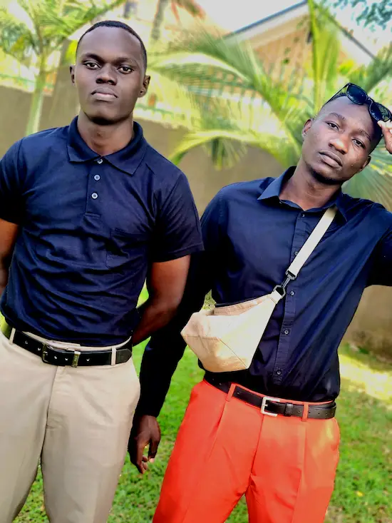

Sekirangi Edward | WDD 130
- 
Hello, My name is Sekirangi Edward, from Uganda, I do enjoy lots of things including learning and working, that is just some little details about me, I do not take lots of images, but that is me on the left. I have been priviledged to be a member of the Church of Jesus Christ of Latter day saints for quite a while now. And I was able to serve a full time mission in the Zambia Lusaka mission. An experience like no other that brought me closer to God and strengthened my faith. I love a few other things as well except the Gospel of Christ, I love swimming, watching batman movies and shows, for some reason. Because he is the only superhero character I can fully relate to. That is just a little about me, and you will get to know more as we move on.
Favorite Temples
- The Salt lake City temple
Anybody with love for great workmanship has to have this temple at the top of their list... the best of the best
- Ghana Accra Tempe
This is one on the few temples I have got to see in person, so it is definitely up there
- Nauvoo Illinois Temple
Church history and heritage is truly remarkable, especially with a temple like this one, many things to reminisce on it, above all, it's beauty amazes me.